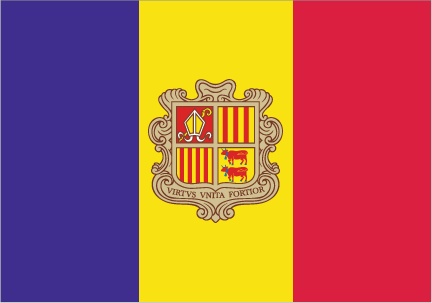
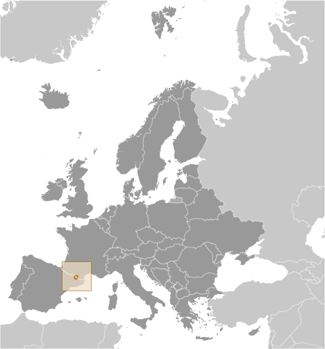
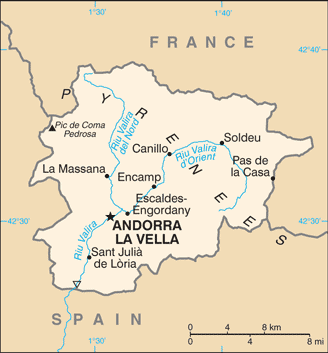

Europe :: ANDORRA
Introduction :: ANDORRA
-
The landlocked Principality of Andorra is one of the smallest states in Europe, nestled high in the Pyrenees between the French and Spanish borders. For 715 years, from 1278 to 1993, Andorrans lived under a unique coprincipality, ruled by French and Spanish leaders (from 1607 onward, the French chief of state and the Bishop of Urgell). In 1993, this feudal system was modified with the introduction of a modern, constitution; the co-princes remained as titular heads of state, but the government transformed into a parliamentary democracy.Andorra has become a popular tourist destination visited by approximately 10 million people each year drawn by the winter sports, summer climate, and duty-free shopping. Andorra has also become a wealthy international commercial center because of its mature banking sector and low taxes. As part of its effort to modernize its economy, Andorra has opened to foreign investment, and engaged in other reforms, such as advancing tax initiatives aimed at supporting a broader infrastructure. Although not a member of the EU, Andorra enjoys a special relationship with the organization and uses the euro as its national currency.
Geography :: ANDORRA
-
Southwestern Europe, Pyrenees mountains, on the border between France and Spain42 30 N, 1 30 EEuropetotal: 468 sq kmland: 468 sq kmwater: 0 sq kmcountry comparison to the world: 1962.5 times the size of Washington, DCtotal: 118 kmborder countries (2): France 55 km, Spain 63 km0 km (landlocked)none (landlocked)temperate; snowy, cold winters and warm, dry summersrugged mountains dissected by narrow valleysmean elevation: 1,996 melevation extremes: lowest point: Riu Runer 840 mhighest point: Pic de Coma Pedrosa 2,946 mhydropower, mineral water, timber, iron ore, leadagricultural land: 43.4%arable land 5.5%; permanent crops 0%; permanent pasture 37.9%forest: 34%other: 22.6% (2011 est.)0 sq km (2012)population is unevenly distributed and is concentrated in the 7 urbanized valleys that make up the country's parishes (political administrative divisions)avalanchesdeforestation; overgrazing of mountain meadows contributes to soil erosion; air pollution; wastewater treatment and solid waste disposalparty to: Biodiversity, Desertification, Hazardous Wastes, Ozone Layer Protectionsigned, but not ratified: none of the selected agreementslandlocked; straddles a number of important crossroads in the Pyrenees
People and Society :: ANDORRA
-
85,660 (July 2016 est.)country comparison to the world: 201noun: Andorran(s)adjective: AndorranAndorran 49%, Spanish 24.6%, Portuguese 14.3%, French 3.9%, other 8.2% (2012 est.)Catalan (official), French, Castilian, PortugueseRoman Catholic (predominant)0-14 years: 14.74% (male 6,476/female 6,151)15-24 years: 9.52% (male 4,236/female 3,915)25-54 years: 47.01% (male 20,614/female 19,651)55-64 years: 13.59% (male 6,229/female 5,412)65 years and over: 15.15% (male 6,566/female 6,410) (2016 est.)total: 43.7 yearsmale: 43.8 yearsfemale: 43.5 years (2016 est.)country comparison to the world: 130.07% (2016 est.)country comparison to the world: 1937.8 births/1,000 population (2016 est.)country comparison to the world: 2237.1 deaths/1,000 population (2016 est.)country comparison to the world: 1320 migrant(s)/1,000 population (2016 est.)country comparison to the world: 104population is unevenly distributed and is concentrated in the 7 urbanized valleys that make up the country's parishes (political administrative divisions)urban population: 85.1% of total population (2015)rate of urbanization: 0.14% annual rate of change (2010-15 est.)ANDORRA LA VELLA (capital) 23,000 (2014)at birth: 1.07 male(s)/female0-14 years: 1.05 male(s)/female15-24 years: 1.08 male(s)/female25-54 years: 1.05 male(s)/female55-64 years: 1.15 male(s)/female65 years and over: 1.02 male(s)/femaletotal population: 1.06 male(s)/female (2016 est.)total: 3.6 deaths/1,000 live birthsmale: 3.6 deaths/1,000 live birthsfemale: 3.6 deaths/1,000 live births (2016 est.)country comparison to the world: 201total population: 82.8 yearsmale: 80.6 yearsfemale: 85.1 years (2016 est.)country comparison to the world: 81.39 children born/woman (2016 est.)country comparison to the world: 2128.1% of GDP (2014)country comparison to the world: 534 physicians/1,000 population (2010)2.5 beds/1,000 population (2009)improved:urban: 100% of populationrural: 100% of populationtotal: 100% of populationunimproved:urban: 0% of populationrural: 0% of populationtotal: 0% of population (2015 est.)improved:urban: 100% of populationrural: 100% of populationtotal: 100% of populationunimproved:urban: 0% of populationrural: 0% of populationtotal: 0% of population (2015 est.)NANANA32.1% (2014)country comparison to the world: 583.1% of GDP (2014)
Government :: ANDORRA
-
conventional long form: Principality of Andorraconventional short form: Andorralocal long form: Principat d'Andorralocal short form: Andorraetymology: the origin of the country's name is obscure; since the area served as part of the Spanish March (defensive buffer zone) against the invading Moors in the 8th century, the name may derive from the Arabic "ad-darra" meaning "the forest"parliamentary democracy (since March 1993) that retains its chiefs of state in the form of a co-principality; the two princes are the president of France and bishop of Seu d'Urgell, Spain, who are represented in Andorra by the co-princes' representativesname: Andorra la Vellageographic coordinates: 42 30 N, 1 31 Etime difference: UTC+1 (6 hours ahead of Washington, DC during Standard Time)daylight saving time: +1hr, begins last Sunday in March; ends last Sunday in October7 parishes (parroquies, singular - parroquia); Andorra la Vella, Canillo, Encamp, Escaldes-Engordany, La Massana, Ordino, Sant Julia de Loria1278 (formed under the joint sovereignty of the French Count of Foix and the Spanish Bishop of Urgell)Our Lady of Meritxell Day, 8 September (1278)drafted 1991, approved by referendum 14 March 1993, effective 28 April 1993 (2016)mixed legal system of civil and customary law with the influence of canon lawhas not submitted an ICJ jurisdiction declaration; accepts ICCt jurisdictioncitizenship by birth: nocitizenship by descent only: the mother must be an Andorran citizen or the father must have been born in Andorra and both parents maintain permanent residence in Andorradual citizenship recognized: noresidency requirement for naturalization: 25 years18 years of age; universalchief of state: French Coprince Francois HOLLANDE (since 15 May 2012); represented by Thierry LATASTE (since 5 January 2015) and Spanish Coprince Archbishop Joan-Enric VIVES i Sicilia (since 12 May 2003); represented by Josep Maria MAUN (since 20 July 2012)head of government: Head of Government (or Cap de Govern) Antoni MARTI PETIT (since 12 May 2011)cabinet: Executive Council designated by head of governmentelections/appointments: head of government indirectly elected by the General Council (Andorran parliament), formally appointed by the coprinces for a 4-year term; election last held on 31 March 2015 (next to be held in April 2019); the leader of the majority party in the General Council is usually elected head of governmentelection results: Antoni MARTI PETIT (DA) elected head of government; percent of General Council vote - 79%description: unicameral General Council of the Valleys or Consell General de les Valls (a minimum of 28 seats; 14 members directly elected in multi-seat constituencies (parishes) by simple majority vote and 14 directly elected in a single national constituency by proportional representation vote; members serve 4-year terms); note - each voter casts two separate ballots - one for a national list and one for a parish listelections: last held on 1 March 2015 (next to be held in April 2019)election results: seats by party - percent of vote by party: DA 34.5%, PLA 25.0%, PS-VA-IC-independent coalition 21.3%, SDP 9.6%, invalid votes 9.5%; seats by party: DA 15, PLA 8, PS-VA-IC-independent coalition 3, SDP 2highest court(s): Supreme Court of Justice of Andorra or Tribunal Superior de la Justicia d'Andorra (consists of the court president and 8 judges organized into civil, criminal, and administrative chambers); Constitutional Court or Tribunal Constitucional (consists of 4 magistrates)judge selection and term of office: Supreme Court president and judges appointed by the Supreme Council of Justice, a 5-member judicial policy and administrative body appointed 1 each by the coprinces, 1 by the General Council, 1 by the executive council president, and 1 by the courts; judges serve 6-year renewable terms; Constitutional magistrates appointed 2 by the coprinces and 2 by the General Council; magistrates' appointments limited to 2 consecutive 8-year termssubordinate courts: Tribunal of Judges or Tribunal de Batlles; Tribunal of the Courts or Tribunal de CortsCitizens' Initiative or IC [Sergi RICART] (including PS, VA, IC, and independents)Democrats for Andorra or DA [Antoni MARTI PETIT]Greens of Andorra or VA [Isabel LOZANO MUNOZ, Juli FERNANDEZ BLASI]Liberal Party or PLA [Josep PINTAT FORNE]Social Democratic Party or PS [Vincenc ALAY FERRER]Social Democratic Progress Party or SDP [Victor NAUDI ZAMORA]note: there are also several smaller parties at the parish level (one is Lauredian Union)CE, FAO, ICAO, ICC (NGOs), ICCt, ICRM, IFRCS, Interpol, IOC, IPU, ITU, OIF, OPCW, OSCE, UN, UNCTAD, UNESCO, Union Latina, UNWTO, WCO, WHO, WIPO, WTO (observer)chief of mission: Ambassador Elisenda VIVES BALMANA (since 2 March 2016)chancery: 2 United Nations Plaza, 27th Floor, New York, NY 10017telephone: [1] (212) 750-8064FAX: [1] (212) 750-6630the US does not have an embassy in Andorra; the US ambassador to Spain is accredited to Andorra; US interests in Andorra are represented by the US Consulate General's office in Barcelona (Spain); mailing address: Paseo Reina Elisenda de Montcada, 23, 08034 Barcelona, Spain; telephone: [34] (93) 280-2227; FAX: [34] (93) 280-6175three vertical bands of blue (hoist side), yellow, and red, with the national coat of arms centered in the yellow band; the latter band is slightly wider than the other two so that the ratio of band widths is 8:9:8; the coat of arms features a quartered shield with the emblems of (starting in the upper left and proceeding clockwise): Urgell, Foix, Bearn, and Catalonia; the motto reads VIRTUS UNITA FORTIOR (Strength United is Stronger); the flag combines the blue and red French colors with the red and yellow of Spain to show Franco-Spanish protectionnote: similar to the flags of Chad and Romania, which do not have a national coat of arms in the center, and the flag of Moldova, which does bear a national emblemnational colors: blue, yellow, redname: "El Gran Carlemany" (The Great Charlemagne)lyrics/music: Joan BENLLOCH i VIVO/Enric MARFANY BONSnote: adopted 1921; the anthem provides a brief history of Andorra in a first person narrative
Economy :: ANDORRA
-
Tourism, retail sales, and finance are the mainstays of Andorra's tiny, well-to-do economy, accounting for more than three-quarters of GDP. Andorra's duty-free status for some products and its summer and winter resorts attract millions of visitors annually, although the economic downturn in neighboring countries has curtailed the number of tourists. Agricultural production is limited - only about 5% of the land is arable - and most food has to be imported, making the economy vulnerable to changes in fuel and food prices. The principal livestock is sheep. Manufacturing output and exports consist mainly of perfumes and cosmetic products, products of the printing industry, electrical machinery and equipment, clothing, tobacco products, and furniture. Andorra is a member of the EU Customs Union and is treated as an EU member for trade in manufactured goods (no tariffs) and as a non-EU member for agricultural products. Andorra uses the euro and is effectively subject to the monetary policy of the European Central Bank. Andorra's comparative advantage as a tax haven eroded when the borders of neighboring France and Spain opened; its bank secrecy laws have been relaxed under pressure from the EU and OECD.Slower growth in Spain and France has dimmed Andorra's economic prospects. Since 2010, a drop in tourism contributed to a contraction in GDP and a sharp deterioration of public finances, prompting the government to begin implementing several austerity measures to reduce the budget deficit, including levying a special corporate tax. The Government is also planning to institute an income tax at the behest of the Organization for Economic Cooperation and Development. The new tax will apply to anyone who lives in the principality for at least 183 days in a calendar year. The first $30,000 of income will be tax free, with the next $20,000 taxed at 5%. The balance of income exceeding the initial $50,000 will be taxed at 10%, which is still less than in most West European countries. Andorra’s Government also relaxed its residency and investment laws in 2012 to make the country more attractive to foreign investors. A person now must spend 90 days a year in the principality to qualify for residency, compared with the previous 180-day requirement. Foreigners now have the same property ownership rights as citizens. In addition, three new categories of residency permits were introduced. Anyone who is retired or at least not working in Andorra can obtain a permit in the first category by making a financial investment in the country of at least €400,000, which can include a property purchase.$3.163 billion (2012 est.)$3.214 billion (2011 est.)$3.227 billion (2010 est.)note: data are in 2012 US dollarscountry comparison to the world: 184$4.8 billion (2012 est.)-1.6% (2012 est.)-0.4% (2011 est.)-1.9% (2010 est.)country comparison to the world: 204$37,200 (2011 est.)$37,700 (2010 est.)$37,900 (2009 est.)country comparison to the world: 47agriculture: 14%industry: 79%services: 6% (2011 est.)small quantities of rye, wheat, barley, oats, vegetables, tobacco; sheep, cattletourism (particularly skiing), banking, timber, furnitureNA%36,060 (2012)country comparison to the world: 199agriculture: 0.4%industry: 4.7%services: 94.9% (2010)4% (2012 est.)1.9% (2011 est.)country comparison to the world: 36NA%lowest 10%: NA%highest 10%: NA%revenues: $1.029 billionexpenditures: $1.041 billion (2012)21.4% of GDP (2012)country comparison to the world: 146-0.3% of GDP (2012)country comparison to the world: 4441.1% of GDP (2012)37.7% of GDP (2011)country comparison to the world: 112calendar year1.1% (2012 est.)-2.5% (2011 est.)country comparison to the world: 89$70 million (2012 est.)$72 million (2011 est.)country comparison to the world: 198tobacco products, furniture$1.43 billion (2012 est.)$1.501 billion (2011 est.)country comparison to the world: 174consumer goods, food, fuel, electricity$NAeuros (EUR) per US dollar -0.885 (2015 est.)0.7525 (2014 est.)0.7634 (2013 est.)0.78 (2012 est.)0.7185 (2011 est.)
Energy :: ANDORRA
-
electrification - total population: 100% (2016)91.24 million kWh (2011)country comparison to the world: 201562.4 million kWh (2012)country comparison to the world: 1690 kWh (2012 est.)country comparison to the world: 990 kWh (2012 est.)country comparison to the world: 115520,000 kW (2010 est.)country comparison to the world: 13961.3% of total installed capacity (2010 est.)country comparison to the world: 1280% of total installed capacity (2010 est.)country comparison to the world: 4123.3% of total installed capacity (2010 est.)country comparison to the world: 87
Communications :: ANDORRA
-
total subscriptions: 38,850subscriptions per 100 inhabitants: 45 (July 2015 est.)country comparison to the world: 168total: 71,000subscriptions per 100 inhabitants: 83 (July 2015 est.)country comparison to the world: 198general assessment: modern automatic telephone systemdomestic: modern system with microwave radio relay connections between exchangesinternational: country code - 376; landline circuits to France and Spain (2012)1 public TV station and 2 public radio stations; about 10 commercial radio stations; good reception of radio and TV broadcasts from stations in France and Spain; upgraded to terrestrial digital TV broadcasting in 2007; roughly 25 international TV channels available (2012).adtotal: 83,000percent of population: 96.9% (July 2015 est.)country comparison to the world: 176
Transportation :: ANDORRA
-
C3 (2016)total: 320 km (2008)country comparison to the world: 203
Military and Security :: ANDORRA
-
no regular military forces, Police Service of Andorra (2011)defense is the responsibility of France and Spain
Transnational Issues :: ANDORRA
-
none